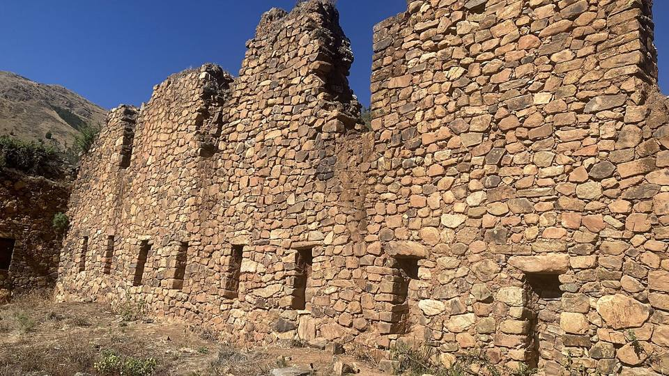
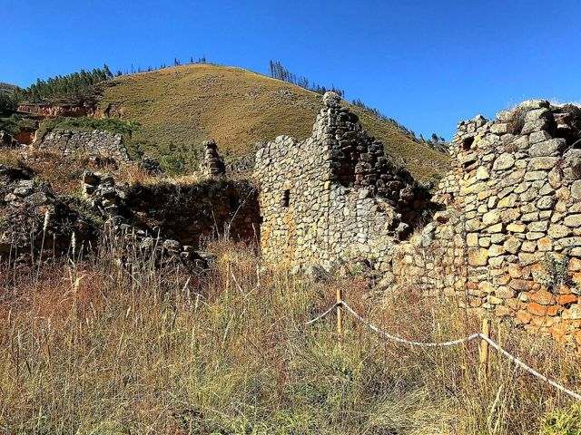
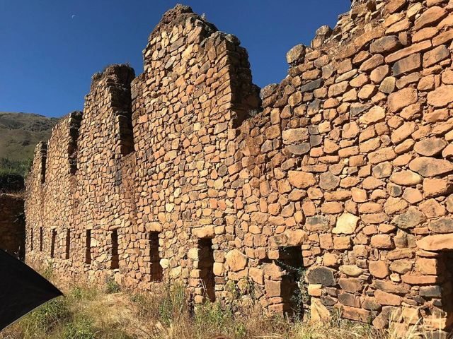
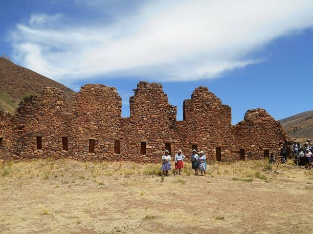
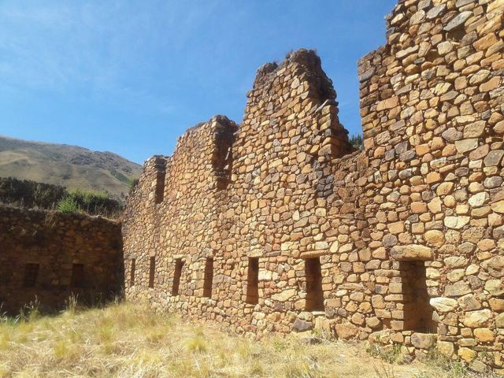
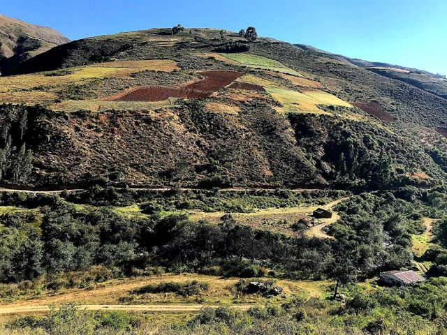

Incallajta
Departamento de Cochabamba · Cultura e historia

Incallajta es la ciudad inca más grande de Bolivia, construida para defender el imperio de los pueblos del oriente. Tiene una enorme sala ceremonial de muros de piedra y barro, en un valle aislado donde casi no hay nadie. Una visita para amantes de la historia y de los lugares poco conocidos.
2950 maltura
1 díapara quedarse
Qué hacer
- La gran kallanka (sala ceremonial) y la fortaleza
- Cascada cercana
Qué comer
- ChichaBebida fermentada de maíz, algo ácida, servida en tutumas. Se encuentra en las chicherías marcadas con una bandera blanca.
- Picante mixtoPlato con varias carnes (pollo, lengua, res) en salsa de ají, con chuño y arroz. Para los que aman el picante.
Consejo. Poco transporte público: mejor en auto o en excursión desde Cochabamba. Se puede combinar con Totora.
Cómo llegar a Incallajta
Totora Carretera (bus, auto) · 1 h 30
Auto.
Cochabamba Carretera (bus, auto) · 3 h
Auto o excursión organizada. El transporte público es complicado (bus hasta Pocona y luego taxi).
Fotos de Incallajta










Otros lugares de la región
 CochabambaLa «ciudad de la eterna primavera» y capital gastronómica del país.
CochabambaLa «ciudad de la eterna primavera» y capital gastronómica del país. Laguna AlalayUna gran laguna en el corazón de Cochabamba, refugio de aves al pie de los cerros.
Laguna AlalayUna gran laguna en el corazón de Cochabamba, refugio de aves al pie de los cerros. Parque Nacional TunariLas montañas justo encima de la ciudad: lagunas de altura y la cumbre del Tunari (5035 m).
Parque Nacional TunariLas montañas justo encima de la ciudad: lagunas de altura y la cumbre del Tunari (5035 m). Valle Alto: Tarata y ClizaPueblos coloniales del valle, mercados y chicha.
Valle Alto: Tarata y ClizaPueblos coloniales del valle, mercados y chicha. Quillacollo e Inca RakayRuinas incas encima de Sipe Sipe, y Quillacollo, ciudad de la Urkupiña.
Quillacollo e Inca RakayRuinas incas encima de Sipe Sipe, y Quillacollo, ciudad de la Urkupiña. Parque Nacional TorotoroHuellas de dinosaurio, un cañón espectacular y la caverna de Umajalanta.
Parque Nacional TorotoroHuellas de dinosaurio, un cañón espectacular y la caverna de Umajalanta. TotoraPueblito colonial muy bien conservado en la carretera antigua a Santa Cruz.
TotoraPueblito colonial muy bien conservado en la carretera antigua a Santa Cruz. AiquileLa capital nacional del charango, a medio camino entre Cochabamba y Sucre.
AiquileLa capital nacional del charango, a medio camino entre Cochabamba y Sucre. MizquePueblo colonial de un valle cálido, tierra de la paraba frente roja.
MizquePueblo colonial de un valle cálido, tierra de la paraba frente roja.